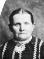
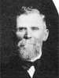

John and Ane Pedersen Anderson Lovell Family Group
Home
Histories
Charts
Photos
Maps
Restricted
News
Info
Contact
John Lovell  (9 May 1812 - 13 Jan. 1881) - pictured at the right (9 May 1812 - 13 Jan. 1881) - pictured at the rightAne Pederson Anderson (18 Mar. 1824 - 28 July 1920)Married 4 Apr. 1857 He also married Ann Parsons  He also married Elizabeth Smith . She also married Jens Andersen
|   |
|  | Castina Lovell 6 Mar. 1858 - 7 Jan. 1912 Married Anthony Christensen 14 Apr. 1873The 1st child of John Lovell and Ane Pedersen Anderson |
 |
Ann Elizabeth Lovell 11 Dec. 1859 - 16 Dec. 1916 Married Frederick Rich Lyman 6 Dec. 1875The 2nd child of John Lovell and Ane Pedersen Anderson |
  |
Brigham Anderson Lovell 19 Dec. 1861 - 3 Apr. 1948 Married Harriet Wiggil Talbot 9 Oct. 1884 The 3rd child of John Lovell and Ane Pedersen Anderson |
| John Edmund Lovell 14 Dec. 1863 - 19 Feb. 1951 Married Harriet Jane Lyman 4 Oct. 1883 The 4th child of John Lovell and Ane Pedersen Anderson | |
| Sylvia Ann Lovell 9 Jan. 1867 - 16 Nov. 1889 Married Walter Clisbee Lyman 4 Oct. 1883 The 5th child of John Lovell and Ane Pedersen Anderson |